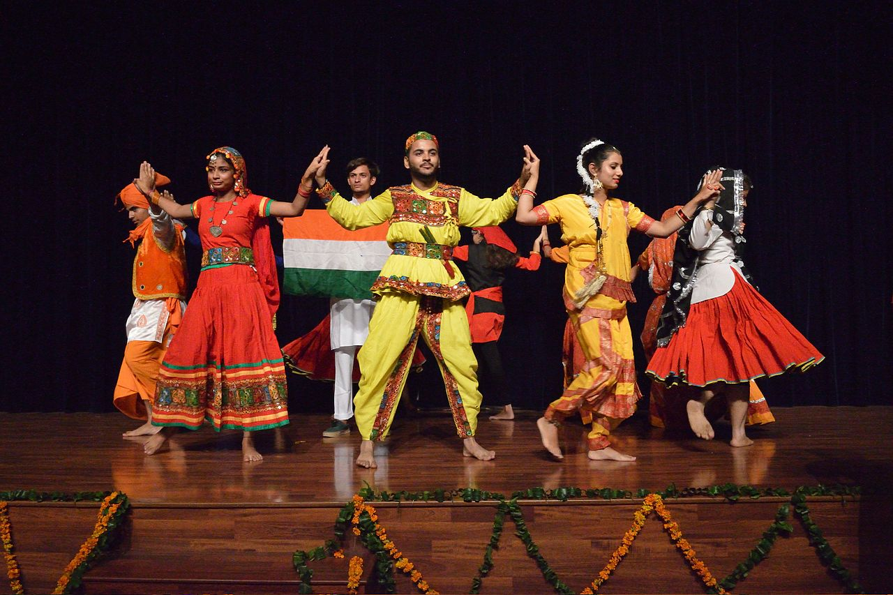

Unity in diversity is used as an expression of harmony and unity between dissimilar individuals or groups. It is a concept of "unity without uniformity and diversity without fragmentation"[1] that shifts focus from unity based on a mere tolerance of physical, cultural, linguistic, social, religious, political, ideological and/or psychological differences towards a more complex unity based on an understanding that difference enriches human interactions. The idea and related phrase is very old and dates back to ancient times in both Western and Eastern Old World cultures. It has applications in many fields, including ecology,cosmology, philosophy,religion and politics.
